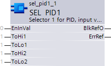
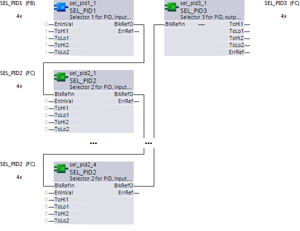

SEL_PID1: Selector 1 for PID; input , 1.FB
Block SEL_PID1 (FB501) forms a selector function (n-to-1 assignment) together with SEL_PID2 and SEL_PID3.
Block SEL_PID1 bundles 4 inputs (2xToHi and 2xToLo) and permits their enable using just one signal [EnInVal].
Principle of operation
Blocks SEL_PID1 and SEL_PID2 bundle 4 inputs each. The enabled input values [EnInVal] = True, are read in sequence by block SEL_PID3 and outputted.
Set BlkRefO: The block decides with each cycle, the DB number and assigns DBNr, FBNr501 and ItfVers to BlkRefO. It is done to eliminate manual manipulations to the output pin.
ErrRef determination: The block checks DBNr, FBNr and ItfVers. ErrRef to Yes or No depending on the result.
Write input values to DB: For no error and input EnInVal=True, the block writes the EnInVal value as well as the input values to the DB.

Inputs
Pin | E | O | Description |
EnInVal | pa |
| Enable input values Block SEL_PID3 outputs all input values of this block. |
To higher neighbor element 1. | pa |
| To higher neighbor element 1. Log input value |
ToLo1 | pa |
| To lower neighbor element 1. Log input value |
ToHi2 | pa |
| To higher neighboring element 2 Log input value |
ToLo2 | pa |
| To lower neighboring element 2 Log input value |
Outputs
Pin | E | O | Description | |
BlkRefO | a |
| Block reference output Interconnect with SEL_PID2 or SEL_PID3. This implements selector function (n-to-1). | |
ErrRef | a |
| Reference error | |
| 1 (Yes) | No values are outputted at block SEL_PID3.
| ||
| 0 (No) | Normal function. | ||
Pin data
Pin | Description | Data type | Default value | E.g. Engineering unit or Text group | Min. | Max. | Pin type |
EnInVal |
| Boolean | False | True/False | 0 | 1 | In |
To higher neighbor element 1. | To higher neighbor element 1 | Struct {} CtlMod Crdn Ctkn IsInt ..DeltaE |
1 1 1 False 0.0 | True/False |
|
| In |
ToLo1 | To lower neighbor element 1 | Struct {...} CtlMod Crdn Ctkn IsInt ..DeltaE} |
1 1 1 False 0.0 | True/False |
|
| In |
ToHi2 | To higher neighbor element 2 | Struct {...} CtlMod Crdn Ctkn IsInt ..DeltaE |
| True/False |
|
| In |
ToLo2 | To lower neighbor element 2 | Struct {...} CtlMod Crdn Ctkn IsInt ..DeltaE |
1 1 1 False 0.0 | True/False |
|
| In |
BlkRefO | Block reference output | Struct {...} DBNr FBNr501 ItfVers |
0 501 1 |
|
|
| Out |
ErrRef | Error reference | Boolean | 0 |
| 0 | 1 | Out |
Engineering selector function (n-to-1)
Together, blocks SEL_PID1, SEL_PID2 and SEL_PID3 form a selector function (n-to-1).
The following interconnection is important for the correct function.

- Block SEL_PID1 is the first block in the interconnection sequence. It bundles the first 4 inputs.
- One or more SEL_PID2 each bundle additional inputs. Blocks are interconnected to one another via [BlkRefIn] and [BlkRefO].
- Block SEL_PID3 concludes the selector function. It is interconnected via [BlkRefIn] and [BlkRefO] with SEL_PID1 or SEL_PID2.
- The processing sequence is important to proper functioning and must be optimized prior to compiling the chart using the CFC command Optimize chart.
- Only a single block (SEL_PID1, SEL_PID2) is enabled (the last enabled SEL_PID2 in the processing sequence has precedence).
Note: During the initial programming loop, it checks whether interconnection is correct and whether the version of the three blocks is identical. If not, [ErrRef] = 1 (Yes) and no input values are outputted on block SEL_PID3.
Process response
Standard (see General rules and information).
Troubleshooting
Standard (see General rules and information).